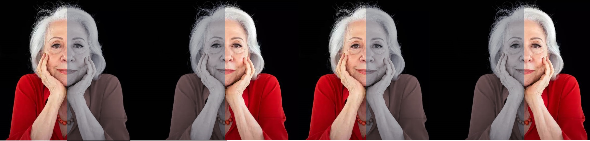

Fernanda Montenegro interpretou com perfeição tantas mães em sua carreira que não é exagero nenhum dizer que Fernanda é, sim, a grande matriarca da dramaturgia brasileira.
Arlette Pinheiro Esteves da Silva Torres, conhecida pelo seu nome artístico, Fernanda Montenegro, é a primeira dama do cinema, da televisão e do teatro, apesar de não sentir-se à vontade com o termo. Única brasileira a concorrer ao Oscar. Primeira a ganhar um Emmy. Há poucos meses de completar 90 anos de vida e 75 de carreira.
Carregada de uma elegância e humildade, Fernanda Montenegro fez questão de dividir a glória, dizendo não estar sozinha e que há muitas outras atrizes e atores dividindo o posto mais alto com ela. Não é exatamente o que diz que vive da dramaturgia brasileira. A soberania de Fernanda é raramente contestada entre críticos, colegas de trabalho, diretores e autores.

PODER FEMININO - Apesar de não aceitar rótulos de reverência, Montenegro admite que através do seu trabalho, pode exaltar o poder feminino, inspirando muitas outras mulheres.
“Ah, sim… Acho que consegui fazer isso. A gente não pode deixar pra amanhã. Sou uma mulher que sempre me assinei, sabe? E também tive um homem, por 60 anos, o Fernando Torres, que jamais disputou masculinidades inúteis. Pelo contrário. Um homem que sempre me apoiou. E se não fosse assim, não estaríamos juntos. Nem ele, nem eu”.
"Eu penso na finitude, porque está perto. Tenho menos tempo adiante do que aquele que já passou. E isso não é uma festa. Na hora de ir, eu vou ter pena. Eu gosto muito da vida, o que eu vou fazer?"
“O teatro e a educação devem caminhar juntos; educar não é só ensinar a ler e escrever, é ensinar a pensar e sentir mundo de outras formas.”.

Clarice Lispector,
São palavras que simbolizam o papel de atriz-mulher
A decepção com o país - Há 20 anos, durante uma entrevista, Montenegro deu o seguinte depoimento: “O jovem deve viver seu presente, seus valores, devem se agrupar e devem discutir o Brasil de agora. E não jogar isso para o futuro um dia. Por que pode dar no que deu o Brasil”. Em 2019 e o recado é "Não sei porque o Brasil caminhou para o nada. Com a idade que estou, atravessei nove décadas. Sempre havia uma esperança para daqui a pouco. Uma esperança de governo. A maior parte não aconteceu. Chegamos no fundo do abismo. Talvez alguma coisa ainda venha pra nos salvar, nos trazer uma saída honrosa, que está desesperador. O brasileiro tem que ter uma esperança ativa. Não adianta ter esperança e ficar sentado. Tem que acordar e ir à luta.”
Para Montenegro, a felicidade está nas coisas mais simples da vida: “O que me faz feliz é ainda acordar e andar, ter conexões no meu viver, estar ainda trabalhando, conseguindo ter uma dinâmica de vida que não posso deixar de agradecer à Deus, à natureza, aos meus pais. É ter conexão com a vida.”
Um conselho “Se você tem uma vocação, vá nela. Se fizer isso, metade da sua vida está resolvida. Se você dribla a vocação, não terá sossego, eu acho. Pode até viver bem. Mas para o que for, na vida, faça isso, se não, metade do teu sentir táesconectado”.